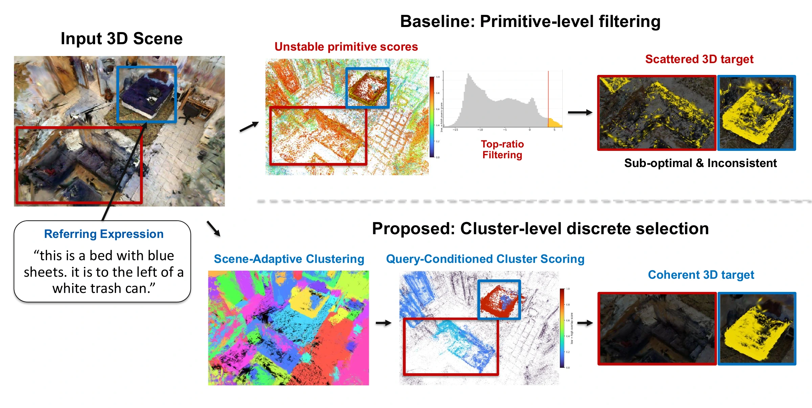
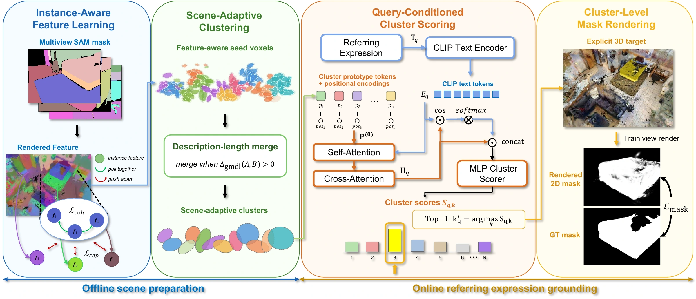
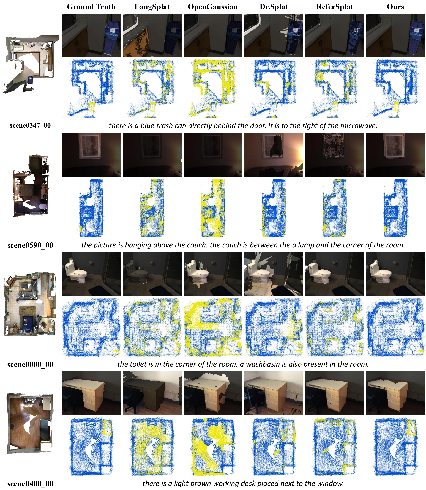
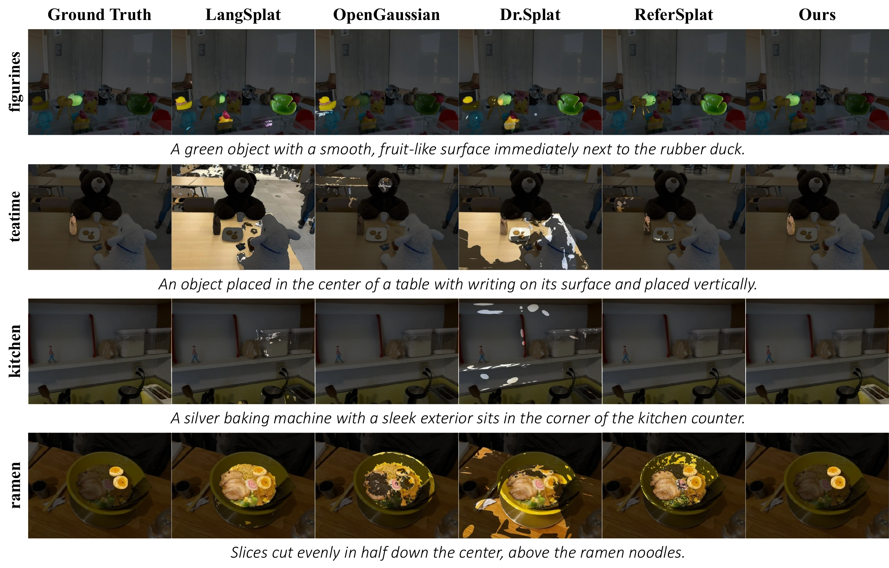

The idea
Language grounding with explicit 3D targets
3D visual grounding asks a referring expression to identify an object both in rendered views and in the 3D scene. Dense Gaussian relevance scores can change across scenes and prompts, making threshold or top-ratio selection sensitive to the chosen heuristic.
ClusterSplat reframes this task as selection over scene-adaptive candidates. It learns instance-aware Gaussian features, forms feature-aware seed voxels, and merges neighboring seeds when a description-length criterion improves. A query-conditioned scorer ranks the resulting clusters: the Top-1 cluster defines the explicit 3D target, while Gaussian-assigned cluster scores support differentiable 2D mask rendering.
Method
Prepare the scene. Select the target.
Scene structure is learned once; each referring expression conditions the cluster scorer.

- 01
Learn instance-aware features
Multi-view mask supervision encourages Gaussians from the same instance to share features while separating different instances.
- 02
Build scene-adaptive candidates
Feature-aware seed voxels merge under a description-length criterion. Each scene determines its own number of candidate clusters.
- 03
Ground the expression
A text-conditioned scorer ranks the candidates. Top-1 selection defines the 3D target, and score rendering predicts the 2D mask.
Interactive examples
Explore the grounding results
Choose a description and inspect the target. Watch the target along a camera path, or compare matched results in Rendered 2D and 3D selection.
Choose from the interactive examples when they have loaded, or view the complete figures below.
Methods in motion
Watch the scene and selected target along the camera path. Choose Rendered 2D or 3D selection to compare methods.
Click an image to inspect it at full size. Open source figure PDF ↗
Scene demonstrations
Watch the scene and selected target along the camera path. Choose Image slider or Side by side to inspect individual captured views.
Orange marks the selected target. Video shows the scene and target along the camera path.
Qualitative results
Rendered masks and 3D object selection
Comparisons from the paper, using appearance and spatial descriptions to identify the target.
ScanRefer
Each example pairs a rendered result with a top-down 3D view, showing both image-space localization and explicit target selection.

Ref-LERF
Fine-grained referring descriptions include attributes, surface cues, and relations to nearby objects.

Quantitative results
Across referring and class-name queries
Results reported in the manuscript. All values use a 0–100 scale; higher is better.
ScanRefer
| Method | 2D mIoU ↑ | 2D mAcc@0.25 ↑ | 3D mIoU ↑ | 3D mAcc@0.25 ↑ |
|---|---|---|---|---|
| LangSplat | 11.00 | 13.41 | 5.81 | 4.95 |
| OpenGaussian | 18.48 | 5.53 | 1.06 | 0.10 |
| Dr.Splat | 19.01 | 27.76 | 9.48 | 11.17 |
| ReferSplat | 31.30 | 45.07 | 4.05 | 0.10 |
| ReferSplat w/ our loss | 31.55 | 45.99 | 3.85 | 0.00 |
| ClusterSplat | 39.72 | 54.35 | 23.33 | 43.38 |
ScanNet v2
| Method | 2D mIoU ↑ | 2D mAcc@0.25 ↑ | 3D mIoU ↑ | 3D mAcc ↑ |
|---|---|---|---|---|
| LangSplat | 27.67 | 40.82 | 2.01 | 8.13 |
| OpenGaussian | 19.55 | 26.11 | 31.05 | 46.39 |
| Dr.Splat | 19.94 | 32.64 | 30.67 | 46.12 |
| ReferSplat | 28.70 | 40.12 | 6.35 | 17.22 |
| ReferSplat w/ our loss | 32.70 | 47.32 | 4.52 | 12.89 |
| ClusterSplat | 42.20 | 58.30 | 29.21 | 46.60 |
Ref-LERF
| Method | 2D mIoU ↑ | 2D mAcc@0.25 ↑ |
|---|---|---|
| LangSplat | 11.27 | 15.79 |
| OpenGaussian | 11.83 | 18.29 |
| Dr.Splat | 5.78 | 6.41 |
| ReferSplat | 25.48 | 35.97 |
| ReferSplat w/ our loss | 26.59 | 36.35 |
| ClusterSplat | 31.14 | 41.70 |
Bold values mark the best score in each column. ScanRefer and ScanNet v2 use a common set of 10 scenes; Ref-LERF uses four scenes. Score-based baselines use the best per-method top-ratio within 0.01–0.10 under the manuscript's oracle sweep; ClusterSplat selects the Top-1 cluster.
ClusterSplat has the highest ScanRefer scores and Ref-LERF averages among the compared methods. On ScanNet v2 it leads the rendered 2D metrics and 3D matching accuracy; OpenGaussian has the higher 3D mIoU.
Scope
Candidate quality matters
ClusterSplat selects one candidate for each referring expression. Over-merging can include nearby distractors, while fragmentation can leave part of an object outside the selected cluster. The quality of scene-adaptive candidates therefore limits the final target selection.
BibTeX
@inproceedings{lee2026clustersplat,
title = {ClusterSplat: Semantic Cluster Selection for 3D Visual Grounding in Gaussian Splatting},
author = {Lee, Jaesung and Hwang, Hyeontaek and Manalu, Gabriel and Kim, Daeyoung},
booktitle = {Advances in Neural Information Processing Systems},
year = {2026},
url = {https://jaesung8.github.io/clustersplat/}
}